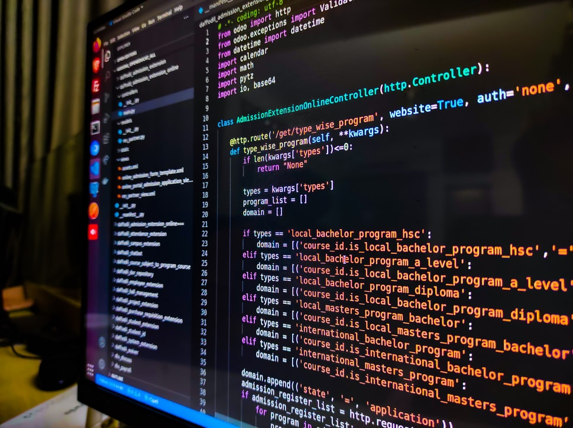
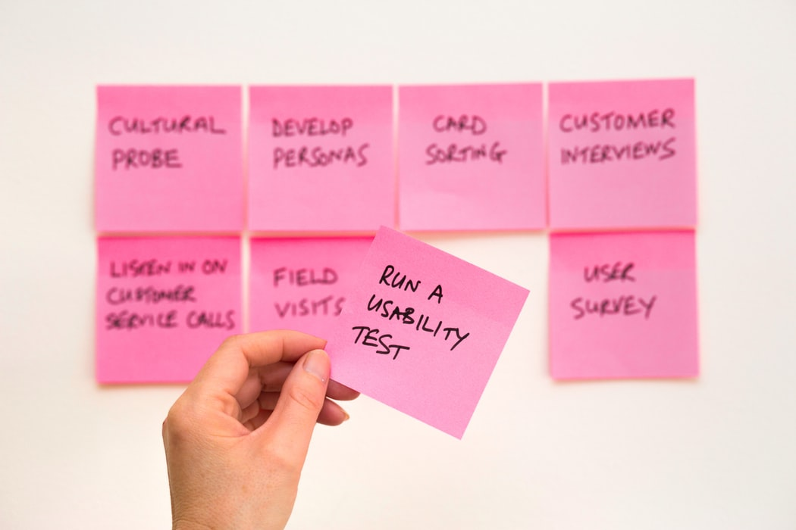

I am Syed Khalil Ur Rehman, i have completed my BS Computer Science (BSCS) and MS Project Management from University of Management and Technology. I have also writeen some fantastic research papers in field of Innovation Management and Enterprenureship that have been publish on research gate. I have 3 three years of teaching experience. I havve one years of experience as Software Quality Assurance Engineer as Manual tester. i am also good at Front End Web Development. My Skills are HTML5, CSS3, Bootstrap5, Javascript, Advance javascripts and Frameworks.

